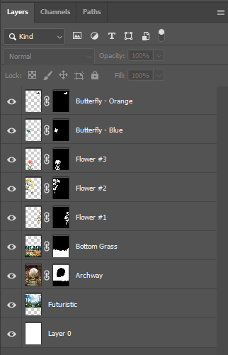

Photomontage


{kind=link}
My photomontage originally started off as an enhanced scenery in a forest with flowers that grow abnormally tall. But then it took a shift to explore the idea of a connection between nature and the future. In the image you see a vibrant garden filled with flowers and butterflies that leads through a stone archway into a futuristic city. I initially placed my image in a garden to show a contrast between the beauty of nature and then the entry way into our future and what it will slowly begin to look like. The futuristic side shows the advanced architecture of a modern city, what we picture 100 years will look like from now. The pathway and archway is like a bridge between two completely different environments. It gives off a sense of the past and the future. The bright colors and layered elements help guide the viewer’s eye from the foreground flowers toward the city skyline in the distance.
To create this image I combined several photographs and graphic elements using non-destructive editing techniques in Photoshop. I first started by looking for the images that I wanted to use on adobe stock then sketching out an idea in my head of how I want to place them. Each image was placed on its own layer and adjusted using the select tool and layer masking. This allowed me to refine the edges and positioning of the images and get rid of any backgrounds that I did not want to include. On some images, mainly the archway and the floral ground, I changed the color hue and also the vibrance to try to get them to blend as closely as possible together. The images I used in this composition came from Adobe Stock. Throughout the process of creating the photomontage I explored ideas such as masking, layering, and contrast to put all of my images together.